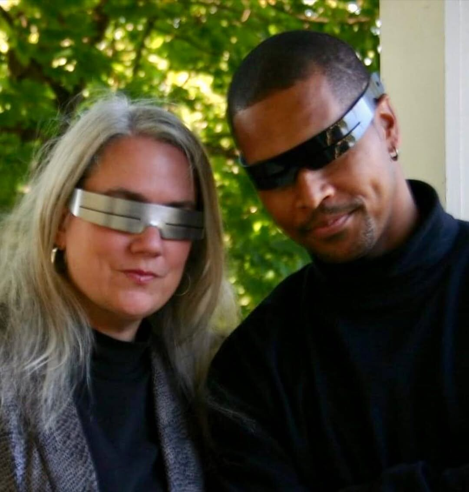
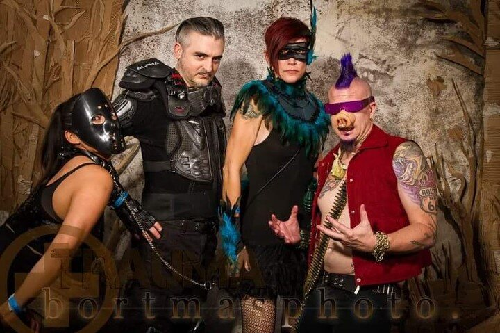

In transit
Carl Millan in the Bronx. A strong everyday portrait of the eyewear in motion.
Original post ↗CURATED FROM @IGAAKS
People wearing IGAAKS, workshop moments, vivid surfaces, and custom work—selected from the studio's Instagram feed. Each image links back to its original post.

Carl Millan in the Bronx. A strong everyday portrait of the eyewear in motion.
Original post ↗
“Preparing blanks for custom order.” The flat metal pieces before they become wearable forms.
Original post ↗
A vivid finish turns the industrial form into a bright graphic statement.
Original post ↗
“Handcrafting in Durham, North Carolina.” A close look at the metal held for careful bench work.
Original post ↗
Nicquan Coleman in IGAAKS, photographed with a fearless mix of color and texture.
Original post ↗
A workshop glimpse of the finishing stage, tagged “How Igaaks are born.”
Original post ↗
Custom tiger eyewear paired with a heavy-duty steel cuff.
Original post ↗
A saturated surface against dark clothing makes the geometry snap into focus.
Original post ↗
A weathered surface, long beard, and quiet outdoor portrait.
Original post ↗
The restrained finish emphasizes the uninterrupted horizontal opening.
Original post ↗
Silver and black, worn side by side outdoors.
Original post ↗
A theatrical group portrait showing the eyewear at home in costume and nightlife.
Original post ↗The Instagram feed remains the living archive for new commissions, people, colors, and workshop experiments.
Follow @IGAAKS ↗